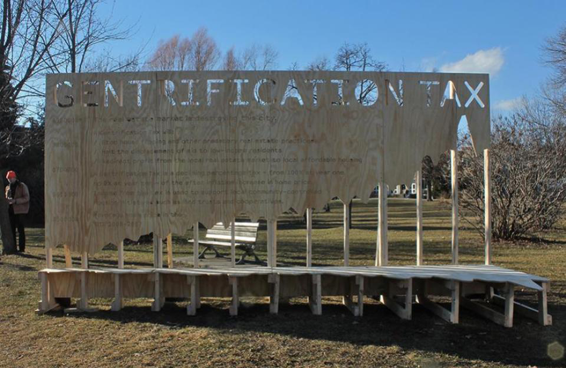
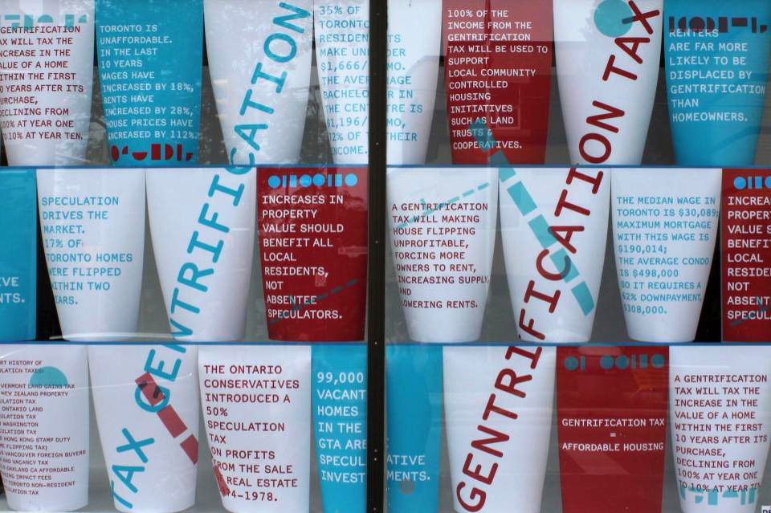
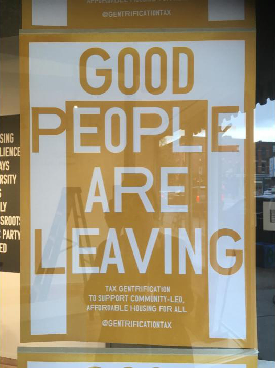
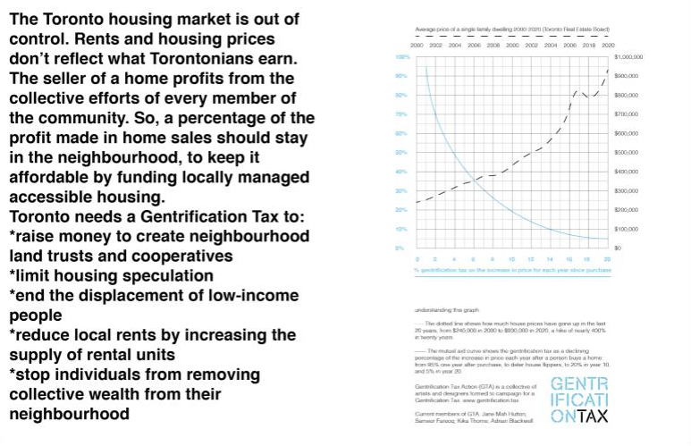

Gentrification Tax Action
Trinity Bellwoods Park, Toronto, February 2018
Install crew: Obay Alrifai, Sabrina Iacono, Reilly McIlhone
Curator: Lamont Abramczyk, Layer Up Winter Art Crawl
Exhibition assistance provided by the Ontario Arts Council

Tax Gentrification
Public Studio, Toronto, June 1 – July 30, 2018
Curator: Sheila Sampath
Artists are Leaving
C Magazine, Issue 140, 2018
Curator: Kari Cwynar

Good People are Leaving
Centre[3] for Artistic and Social Practice, Hamilton, November - December 2018
Curator: Sonali Menezes, dis[RE]placement

“’Human beings are more important than real estate’, or Why We Need a Gentrification Tax in Toronto”
Zine spread accompanying the panel discussion:
Together Apart Festival,
co-presented by Long Winter (Toronto) & La Station-Gare Des Mines (Paris), November 25,
2021. Long Winter: Matt King, Amy Gottung, Tom Beedham, Katerina Stamadianos et al.
Panel discussion with Rinaldo Walcott (Women and Gender Studies, University of Toronto), Martine August (School
of Planning, University of Waterloo), Joshua Barndt (Executive Director, Parkdale Neighbourhood Land Trust),
Cheryll Case (Principal Urban Planner, CP Planning), moderated by Adrian Blackwell of Gentrification Tax Action.